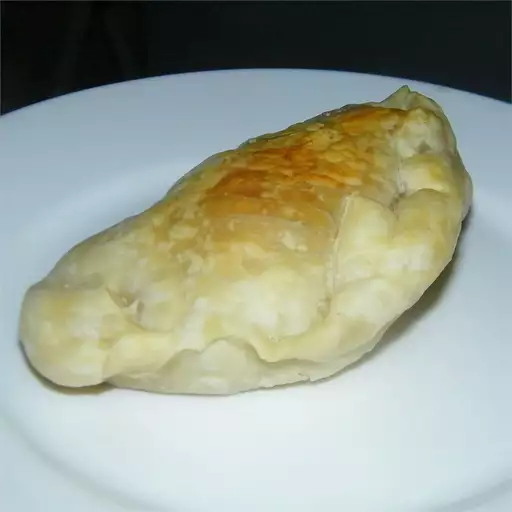

meat empanadas

how to make tasty empanadas
you will be learning how to cook a very delicious food today so prepare your ingredients!
ingredients:
- 1 pound lean ground beef
- ½ cup shortening
- 2 medium onions, chopped
- 2 teaspoons Hungarian sweet paprika
- ¾ teaspoon hot paprika
- ½ teaspoon crushed red pepper flakes
- salt to taste
- 1 teaspoon ground cumin
- 1 tablespoon distilled white vinegar
- ¼ cup raisins
- 2 large hard-cooked eggs, chopped
- ½ cup pitted green olives, chopped
- 1 (17.5 ounce) package frozen puff pastry sheets, thawed
- 1 large egg, beaten (Optional)
how to make
- Spread ground beef into a large sieve. Slowly pour boiling water over top for partial cooking. Let drain and cool.
- Meanwhile, melt shortening in a skillet over medium heat. Add onions; cook and stir until just before they begin to turn golden, 12 to 15 minutes. Remove from the heat and stir in sweet paprika, hot paprika, and red pepper flakes; season with salt.
- Preheat the oven to 350 degrees F (180 degrees C). Line a baking sheet with parchment paper.
- Cut puff pastry dough into 10 circles. Place a spoonful meat mixture onto each round, making sure at least 1/2 inch of the outer pastry edge stays clean and dry. Add olives, raisins, and hard-cooked eggs to each round. Slightly wet the edges of pastry rounds, fold in half into half-moons, and press the edges together. Seal empanadas by twisting and curling dough together between your thumb and index finger, adding pressure before releasing each pinch and moving on to the next one.
- Place empanadas onto the prepared baking sheet. Prick each empanada with a fork near the curled edge to allow steam to escape during baking. Brush empanadas with beaten egg.
- Bake in the preheated oven until golden, 20 to 30 minutes.
- enjoy!